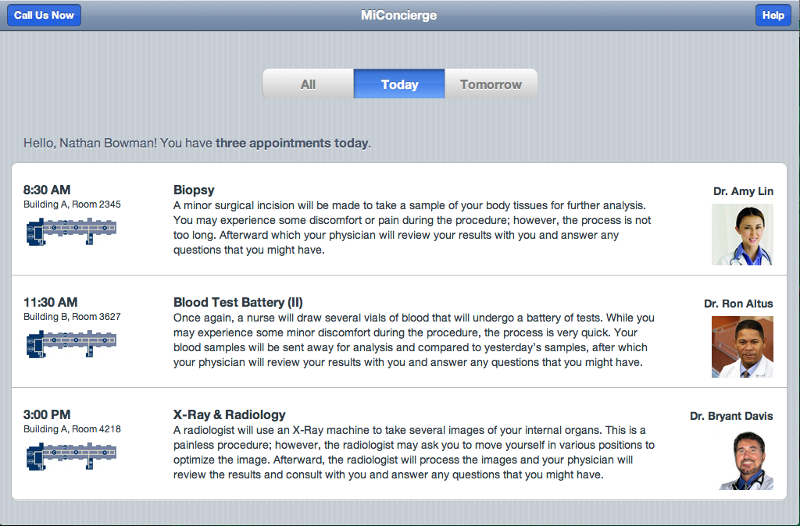
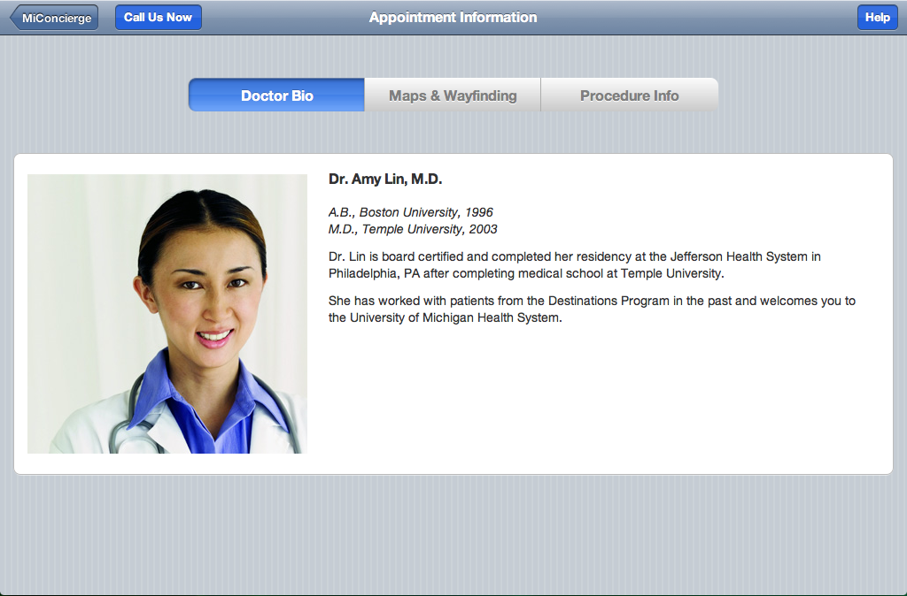

University of Michigan Health
I co-designed an iPad app for visiting patients at the University of Michigan Hospital. Our goal was to improve the patient experience, while enabling patients to easily send feedback to the hospital.

-
Role - UX Designer
-
Timeframe - January 2012–April 2012
-
Services - UX Design
- User Research
- Mobile Design
- Prototyping
-
Collaborators - Evan Kerrigan
-

Mobile Navigation. I designed this based on survey results, user interviews, and a card sort conducted with internal stakeholders.
-

Improved Typography. Article typography was overhauled to utilize modular scales, more attractive headings, and more comfortable spacing.
-
 Before and After. Wikipedia Mobile's main page before and after the redesign.
Before and After. Wikipedia Mobile's main page before and after the redesign. -
 Icon Design. Early iterations of icon sets for the mobile website. I co-organized an iconathon with The Noun Project to further improve upon these concepts.
Icon Design. Early iterations of icon sets for the mobile website. I co-organized an iconathon with The Noun Project to further improve upon these concepts. -
 Iconathon. I co-organized an iconathon with The Noun Project to further improve upon Wikipedia's icon sets for web and mobile. Photo: Matthew Roth
Iconathon. I co-organized an iconathon with The Noun Project to further improve upon Wikipedia's icon sets for web and mobile. Photo: Matthew Roth -
 Survey: Mobile usage on Wikipedia. I used these results and other user research data to define an information architecture for Wikipedia's mobile website.
Survey: Mobile usage on Wikipedia. I used these results and other user research data to define an information architecture for Wikipedia's mobile website. -
 Card Sort & Affinity Wall. Using research data from surveys and user interviews, I led a card sort and affinity diagramming session to drive the creation of a new information architecture for Wikipedia Mobile.
Card Sort & Affinity Wall. Using research data from surveys and user interviews, I led a card sort and affinity diagramming session to drive the creation of a new information architecture for Wikipedia Mobile.


Final Result
We produced a working prototype of an iPad app that alleviated common issues for visiting patients, as well as enabled them to send audio or text-based feedback to the hospital. As of late 2013, the app is still being rolled out.
Video Prototype
We created a video prototype of the patient experience to communicate the pain points and greater context of the app. This video was crucial in encouraging the hospital to adopt our design.
-
 Edit Feedback. This simple edit feedback message led to a 23% increase of edits among new Wikipedia users. This was compared against many other feedback mechanisms, such as gamification, gratitude, and social connections.
Edit Feedback. This simple edit feedback message led to a 23% increase of edits among new Wikipedia users. This was compared against many other feedback mechanisms, such as gamification, gratitude, and social connections. -
 Edit Feedback Iterations. I created many concepts and themes for post-edit feedback. A subset of these were tested on the live product.
Edit Feedback Iterations. I created many concepts and themes for post-edit feedback. A subset of these were tested on the live product. -
 Early Sketches. After filling many pages of my sketchbook with feedback concepts, I mocked up 20 of these designs for testing on Wikipedia.
Early Sketches. After filling many pages of my sketchbook with feedback concepts, I mocked up 20 of these designs for testing on Wikipedia. -
 Data Analysis. Here, two of my designs are compared against a control, with a basic confirmation message leading to the greatest overall improvement in edit rates.
Data Analysis. Here, two of my designs are compared against a control, with a basic confirmation message leading to the greatest overall improvement in edit rates.
Process
Our process was split into four stages over two months. These stages were: problem definition, observation and research, design iteration, and implementation.